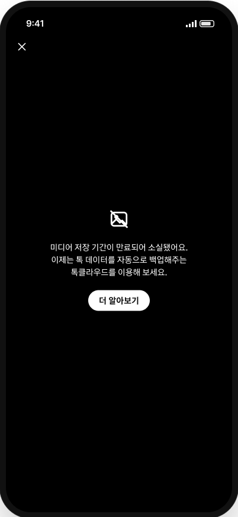
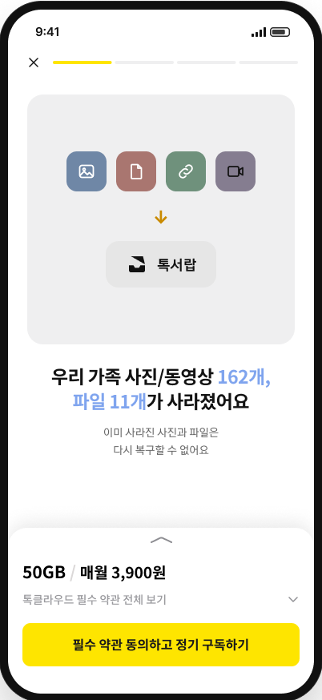
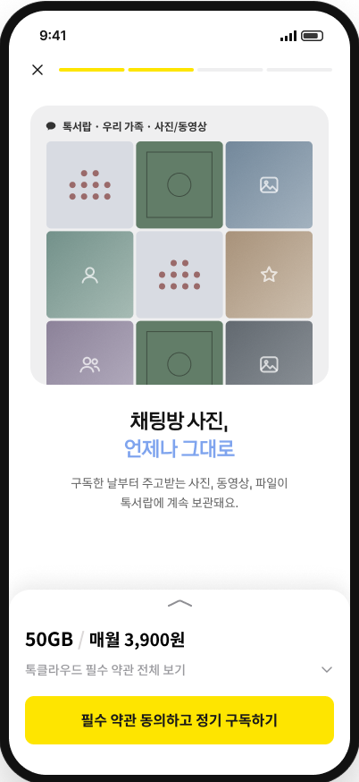
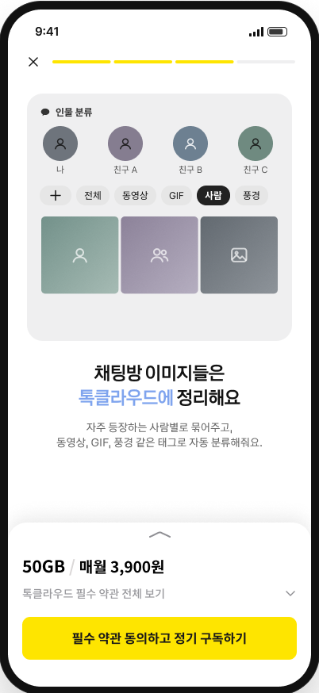
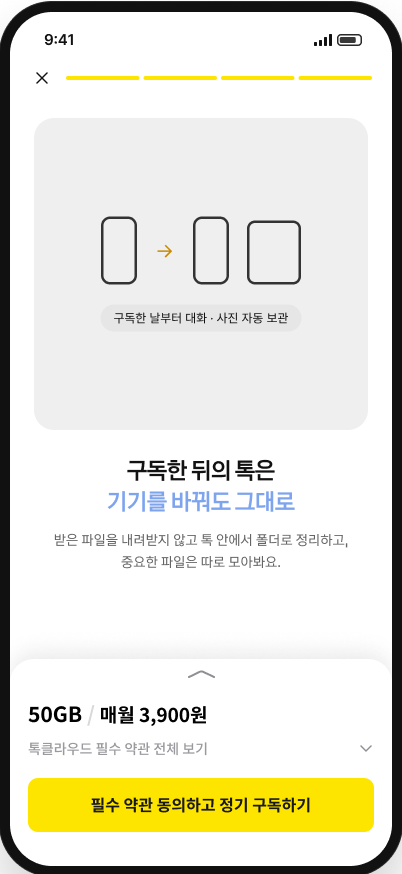
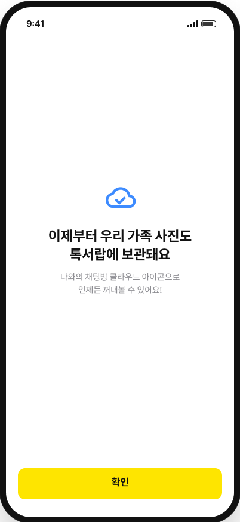

톡서랍 경험 개선
누나
포토북 사진 다 모았어?
톡서랍 결제하면 된대서 했는데…사진 그대로 만료임;;
6명 중 3명은 구독하면 복구되는 줄 알았고,
카카오 고객센터에는 같은 질문이 FAQ로 올라와 있어요.
Problem
구독하면 되찾을 줄 알고 결제했지만,
사진도 돈도 잃었어요.
- 01
원본도 카카오에 있다고 믿어요
가족 단톡방의 몇 년 치 여행 사진. 흐린 미리보기가 남아 있으니 원본도 있다고 생각해요.
- 02
"소실됐어요" 바로 다음에 톡클라우드를 권해요
"미디어 저장 기간이 만료되어 소실됐어요. 이제는 … 톡클라우드를 이용해 보세요." 사라졌다는 말 뒤에 바로 서비스를 권하니, 이걸로 되찾는다고 읽혀요.
- 03
소개 화면엔 "그동안 사라진 162개 사진"이 크게
바로 아래 "앞으로 주고받는 사진만 자동 백업"은 작은 글씨라 놓쳐요.
- 04
구독·보관까지 마쳐도 사진은 그대로 만료
환갑 전에 사진도 돈도 잃어요.

Voice of Customer
"구독했는데 왜 그대로야?"
같은 말이 계속 나와요.
클리앙·에펨코리아 커뮤니티 글에서 모은 사용자 목소리예요.
"톡서랍 복구하면 원본 파일이 만료된 것도 불러올 수 있는지 궁금합니다."
클리앙 · 복구 기대"톡서랍에 사진 다 넣어놓으면 폰에서 지워도 계속 거기에 남아있나요?"
에펨코리아 · 복구 기대"'실질적인' 복원은 지원하지 않는다는 걸 나중에서야 알고 맨붕에 빠졌습니다."
클리앙 · 구독 후 혼란"2만 개가 넘는 파일을 10개씩 선택해서 복구해야 할 줄은 몰랐습니다 ㅠㅠ"
클리앙 · 구독 후 혼란Solution
되찾을 수 없다는 사실을,
결제 전에 먼저 알려줘요.
구독 화면 첫 장에서 이미 사라진 사진을 먼저 알려주고, 그다음에 톡서랍이 앞으로 지켜주는 것을 보여줘요.

① 잃은 것을 먼저
이미 사라진 사진은 복구할 수 없다고 첫 장에서 말해요

② 보관
구독한 날부터 계속 보관돼요

② 찾기
사람·태그로 찾아요

② 복원
기기를 바꿔도 그대로

③ 구독 완료
어디서 꺼내보는지 알려줘요
개선한 뒤의 같은 대화
누나
포토북 사진 다 모았어?
옛날 건 이미 만료됐대.대신 앞으로는 다 남는대!
첫 장에 한 줄만 먼저 보여주면, 화가 아니라 이해로 끝나요.
개선안 프로토타입 보기